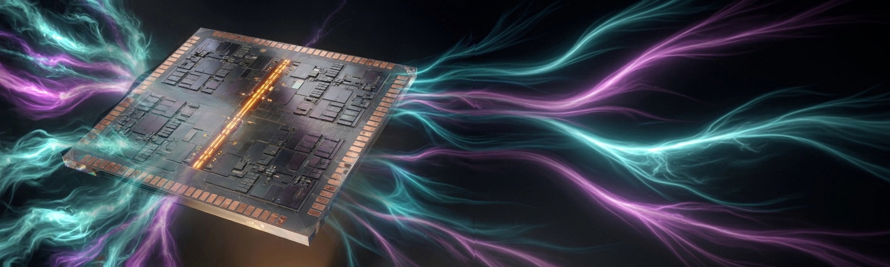

Original FPGA family, and the CAD that targets it.
Helion is not a wrapper around a vendor tool. It is an original FPGA
device family (HL10T-C32-1 in the Helion Architecture Database)
plus the in-repo CAD: synth, pack, place, PathFinder route, STA, DRC,
FeatureMap bitstream, fabric sim, and a desktop IDE
(helion-ide) that paints that same Session.
Empty-XDC counter.sv gold is WNS_PS=9640.
What it is
One repository ships the part description and the tools that compile
onto it. Device facts come from HAD TOML
(devices/helion/parts/HL10T-C32-1.toml): 32×32 interior
CLB, IO ring, clock spine at x=1, 32 user IO, 8 BRAM18, speed 1,
idcode 0x00011A1F. The CAD must query that file. It does
not hardcode a die.
Front ends: SystemVerilog (helion-sv: sv-parser, AIG, FlowMap LUT6),
VHDL-2008 elaborator (helion-vhdl), C subset HLS (helion-hls).
Then pack, timing-driven place, PathFinder A* route, graph STA, DRC,
sparse .hbits, and cycle-accurate fabric sim. The desktop IDE
is an eframe shell over IdeModel. Native desktop target is
Apple Silicon; Linux CI runs the CLI and headless IDE.
What it is not
Not Project X-Ray, not UNISIM, not vendor Tcl, not an AMD / Intel / Lattice bitstream backend. No vendor bitstream. Buses in Helion IP are Helion-MM and Helion-ST, never AXI as a Helion product. License is Apache-2.0 OR MIT.
Fitting a full SoC such as examples/ysyx_ibex.sv onto
HL10T-C32-1 is not the synth bar. The 1.0 bar is
cargo test --workspace (no board) and the gold counter:
4 LUTFF, 1 IOB, WNS_PS=9640, LED waveform
0000000111111110 over 16 cycles (LED = cnt[3]).
CAD pipeline
Each step is a crate. Tcl Session commands drive the same engines the CLI uses.
| Step | Crate | What it does |
|---|---|---|
| synth | helion-sv | sv-parser + AIG + FlowMap LUT6 |
| vhdl | helion-vhdl | VHDL-2008 elaborator, same LUT/FF path as SV |
| hls | helion-hls | C subset scheduled onto LUT / FF / DSP |
| pack | helion-pack | LUTFF + IOB + MAC27 + BRAM18 |
| place | helion-place | timing-driven vs wirelength, BLE overflow |
| route | helion-route | PathFinder A* with hop delay in the cost |
| sta | helion-sta | XDC clocks / I-O delay / false path, WNS + hold |
| drc | helion-drc | occupancy, unrouted IO, clocks |
| bits | helion-bits | FeatureMap frames + sparse .hbits |
| sim | helion-fabric / helion-sim | 6-input IMUX LUT + FF + IOB; event kernel agrees |
| hw | helion-hw | IEEE 1149.1 TAP, sim cable, partial program |
| IDE | helion-gui | helion-ide paints the Session; does not reimplement CAD |
Gold on HL10T-C32-1 (10.000 ns clock)
Measured by helion qor. A LUT, WNS, bitstream-size, or wall-time
regression fails the build until the table is updated in the same commit with a reason.
| Design | LUTFF | WNS_PS | .hbits B |
|---|---|---|---|
blinky.sv | 1 | 9700 | 153 |
counter.sv | 4 | 9640 | 185 |
hier.sv | 1 | 9700 | 153 |
Each gold design uses 1 IOB. Gold waveform:
helion run examples/counter.sv --cycles 16
prints LED[16]=0000000111111110 (LED = cnt[3]), identical in
the fabric model and the event simulator. Headless IDE gate:
helion-ide --headless examples/counter.sv prints
WNS_PS=9640.
Get it
GitHub Releases publish Helion.app (unsigned Apple Silicon),
a darwin-arm64 tarball with CLI + IDE + HAD + examples, a Linux x86_64
tarball (CLI + headless IDE), and SHA256SUMS.txt.
Gatekeeper will warn on macOS until notarization exists.
git clone https://github.com/helion-fpga/helion.git
cd helion
cargo test --workspace
cargo run -p helion-cli -- doctor
cargo run -p helion-cli -- run examples/counter.sv --cycles 16
cargo run -p helion-gui --bin helion-ide -- --headless examples/counter.sv